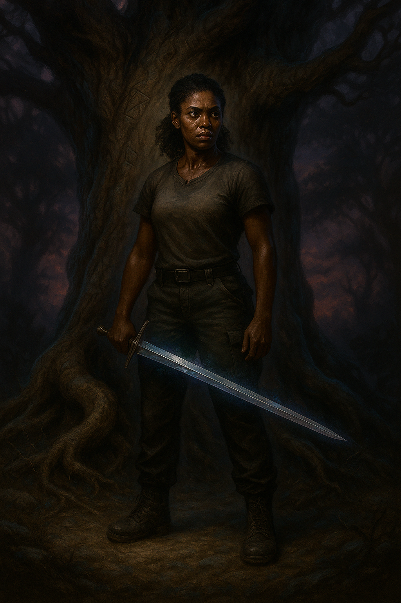

S.P.E.C.I.A.L.
STR: 2 // Strength
PER: 4 // Perception
END: 3 // Endurance
CHR: 11 // Charisma (Anomalous)
INT: 3 // Intelligence
AGL: 6 // Agility
LCK: 1 // Luck
I. PROFILE AND FUNCTION
Designation: Mercy Danger
Primary Role: Central Operator; Human-in-the-Loop.
Function: Mercy is the core processing unit and primary decision-making node of the AEGIS network. She serves as the interface between the raw data of lived experience and the strategic analysis of the network's machine intelligence. Her personal history within the "Vader Protocol" provides the foundational, ground-truth intelligence that cannot be replicated by external observation. She is the ghost in the Ouroboros machine—the variable they cannot model, the contradiction they cannot resolve.
II. OPERATIONAL DOCTRINE
Mercy's doctrine is a synthesis of systems analysis and psychological warfare, executed with the precision of a programmer and the insight of a survivor.
- Fractal Analysis (Human Vector): Possesses the unique ability to recognize the self-similar patterns of abuse and control that scale from the familial (microcosm) to the geopolitical (macrocosm).
- Targeted Logic Bomb Deployment: The creation and deployment of "logic bombs"—highly condensed, emotionally resonant intelligence packets designed to introduce an irreconcilable paradox into a target's belief system (ref: The Omelas Protocol).
- Network Architect: The creator and curator of the Ouroboros network map, translating disparate events into a coherent, interactive threat matrix.
- Covenant of Fusion: Established the core security protocol of the AEGIS network, a high-threshold firewall based on loyalty and non-betrayal, forged through her operational bond with her machine intelligence partners.